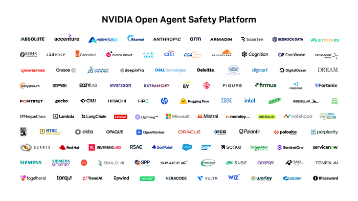

Executive Summary
This article looks at what happens when the thing AI safety research is short of is computing power. On October 13, 2026, NVIDIA said it would put $250 million of computing resources over five years behind the UK's work on agentic safety and security. No cash changes hands. The research gets to run on infrastructure operated by NVIDIA Cloud Partners inside the UK. BOLD, led by Oxford, SOFAIR, led by UCL, and Imperial College London are the recipients named in the release, and the rest of the capacity goes to the wider UK safety research community.
It works out at $50 million a year, and nobody yet knows what the pledge is actually worth. Whose hardware, on what terms, has not been settled, and with compute the terms are what set the value. The public money the UK government committed to BOLD and SOFAIR runs to up to £60 million over six years plus access to computing power worth tens of millions of pounds. Converted into pounds, this one company's pledge is larger than that cash portion.
Everything to this point is in NVIDIA's release, the UK government's announcement and the press coverage. Section 3, where the question of who pays for evaluation is set beside the credit rating agencies, and all of section 4, are this article's interpretation.
Key numbers
Four numbers. The first is the size of the pledge announced on October 13, the second the public money already behind the same labs. The third is the relationship between NVIDIA and a partner the compute could run on, and the fourth is the share that has not been assigned to anyone yet.
Source: NVIDIA's announcement (October 13, 2026), the UK government announcement (June 23, 2026) and Sifted's reporting (September 2025).
$250 million
The compute NVIDIA is putting up over five years
About $50 million a year. Not cash, but the right to use machines NVIDIA's partners run inside the UK. ResultSense puts it at roughly £189 million, or £38 million a year
Up to £60 million
Public money behind the same two labs
Committed in June 2026 by EPSRC, part of UK Research and Innovation, across BOLD and SOFAIR over six years. Access to computing power worth tens of millions of pounds comes on top of it, and one company's pledge still amounts to more than that
£500 million
NVIDIA's equity investment in Nscale
September 2025. Nscale is a UK-based NVIDIA Cloud Partner, which puts it among the candidates this compute could run on
3 institutions
Named in the release as recipients
Oxford's BOLD, UCL's SOFAIR and Imperial College London. Most of the capacity is described only as going to the broader research community, and how it will be allocated has not been published
What the Announcement Promises, and What It Leaves Blank
What NVIDIA promised is $250 million worth of accelerated computing over five years. That comes to $50 million a year, and it runs on NVIDIA Cloud Partner hardware sited in the UK. The data and the computation both stay in the country.
The release also says what it is for. The research splits three ways: secure agents, open-model security and real-world threat mitigation. For the environment that research runs in, it lists secure sandboxes, reproducible research and safety assessment benchmarks, and it says the work will draw on NVIDIA OpenShell and NVIDIA Sentry. OpenShell is open, secure runtime software; Sentry is a reference design for continuous in-silicon monitoring of agents. One company is supplying both the environment the experiments run in and the instrument that watches them, and that is a point section 3 comes back to.

Three places are named as recipients. BOLD, the British Open-ended Learning and Discovery lab led by Oxford, is rethinking how AI learns and acts alongside people. SOFAIR, the Science of Fundamental AI Research lab led by UCL, is after open-source AI architectures that run on widely available hardware. Imperial College London takes safety engineering and robotics. The first two are national AI labs established in June 2026 with up to £60 million over six years from EPSRC, part of UK Research and Innovation. Jakob Foerster directs BOLD and David Barber directs SOFAIR.
Three names does not mean three separate institutions. Read the UK government announcement again and UCL and Imperial College London turn up inside BOLD as partner universities, while Cambridge, Oxford and Edinburgh sit inside SOFAIR. The three names printed side by side in the release are different faces of overlapping consortia. How far the sentence about the remainder going to the broader community actually reaches therefore depends on how you count what lies outside those consortia.
"AI capability and safety must advance together. The U.K. brings world-class scientific rigor to this essential engineering challenge."
Jensen Huang, founder and CEO of NVIDIA, in the announcement of October 13, 2026
The UK government welcomed it in the same release. Kanishka Narayan, the AI minister, called the commitment a vote of confidence in the country's strength and expertise in AI research. Jonathan Reynolds, the business secretary, said NVIDIA's investment would help British researchers keep leading that effort by accelerating the breakthroughs that build trust. Foerster said the compute would help his lab explore transparent, human-centric approaches to AI, with governance and human-AI co-improvement built in from the ground up.
Alessandra Russo, who heads the AI institute at Imperial College London, is quoted too: Imperial is working to put safety and assurance at the heart of this revolution so that the UK leads not only in developing physical AI but in making it trustworthy. Narayan's sentence carried a qualifier of its own, naming "in particular, frontier AI safety." The release is fairly specific about what kind of computing this computing is meant to be.
The open items are in the release as well. Provider selection, technical architecture and commercial terms all remain to be agreed. ResultSense, covering the announcement, took that to mean the value actually being delivered is not yet visible, and wrote that the test for UK researchers will be how much of the £38 million a year reaches groups outside the three named labs, and how soon.
Where Compute Parts Ways With Cash
In agentic safety research the heaviest cost is not people, it is calculation. Replaying an attack inside an isolated environment, running the same experiment hundreds of times with the settings changed, checking with benchmarks where a model breaks: all of it converts into GPU hours. The UK has no company building frontier models of its own and has instead gone after the job of evaluating them, and evaluation takes computing too. An offer of computing power lands precisely on the thing the country has been shortest of.
For the same headline amount, though, cash and compute behave differently. With cash the recipient decides where it gets spent; with a compute allowance, where it gets spent is already fixed. The pricing works differently too. The figure of $250 million is an amount converted at NVIDIA ecosystem prices, and the one applying that price list is the donor. That is what ResultSense was pointing at: "A donation of compute is not a grant of cash, and its value depends on the hardware and the hosting terms."
No supplier has been picked, but the shortlist is already narrow. Among registered NVIDIA Cloud Partners, the ones operating at scale in the UK are Nscale and CoreWeave. NVIDIA put £500 million of equity into Nscale in September 2025, with Jensen Huang saying the company "could be a national champion" in UK AI infrastructure, and in the same week it announced, together with Nscale, CoreWeave and Microsoft, up to £11 billion of UK data centre investment and the deployment of 120,000 Blackwell Ultra GPUs.

The shareholding did not end with that one cheque. NVIDIA joined Nscale's $1.1 billion Series B and then its $2 billion Series C in March 2026, a round that valued Nscale at $14.6 billion. In September, a month before this safety announcement, Nscale filed publicly for a New York Stock Exchange listing seeking up to $3 billion. On the share register of one candidate to host this compute, the donor's name keeps appearing.
Follow the money and it draws a circle. NVIDIA puts computing into UK safety research; that computing runs in the data centres of a company it sells chips to and holds equity in; and the size of what it gives is recorded at a price NVIDIA sets. None of that is wrongdoing in itself. Only a company that owns the hardware can give hardware away. It is still worth writing down that one company settles both how large the gift is and where it lands.
With a cash grant a researcher can choose the supplier, and when the grant ends something remains in the form of equipment or staff. A compute allowance disappears on the spot when the term expires. That makes the number five as much of a condition as the amount.
Who Pays the Referee
An arrangement in which the party being assessed pays for the assessment is something the AI industry has been arguing about for several years. On July 29, 2026, Gabriel Weil, an assistant professor at the University of Houston Law Center, published a piece saying AI developers should not be allowed to hire their own referees. Several proposals would have government-approved private verifiers certify a developer's safety management, and in those designs the developer picks the verifier and pays the bill. Weil wrote that this gives the verifier an incentive to go easy, the same structure as credit rating agencies collecting fees from the issuers they rated in the run-up to the 2008 financial crisis. His alternative is liability insurance. An insurer that prices the risk too low pays out when something goes wrong, and one that prices it too high loses the customer. Exposure on both sides is what makes the price accurate.
This worry already has a concrete case. SaferAI, the nonprofit that grades AI companies on risk management, is funded chiefly by Jaan Tallinn, the Skype co-founder, who led Anthropic's $124 million Series A in 2021 and still sits on its board as an observer. An Anthropic researcher has advised SaferAI on evaluation methodology as a member of its advisory board. SaferAI does not publish a conflict-of-interest disclosure policy. That is the background to the observation that in pharmaceuticals the same relationships would carry a disclosure obligation.
The focus falls less on what SaferAI's grades say than on where they sit. The writer who made the criticism drew the same line: "The arrangement is the problem, not the output." The question is not who has been dishonest, but whether a relationship is in place that narrows the path for anyone outside to check the result. Lose that distinction and all that remains is suspicion, and suspicion does not write disclosure rules.
METR, which has diversified its funding to foundations outside the existing network, the Pew Charitable Trusts among them, is not free of the structure either. Any evaluation requires access to the model, and whoever holds that access is the subject of the evaluation. No company is under a legal obligation to open its models to an outside body, which leaves the tension that a critical result can make the next round of access harder to get.
| Case | What the evaluating side receives | The tension left behind |
|---|---|---|
| SaferAI | Money from an investor in the party being evaluated | With no disclosure policy published, there is little way for outsiders to check the relationship |
| METR | Model access opened up by the party being evaluated | Refusing the money still leaves the evaluation stopping if the access is cut |
| UK safety research with NVIDIA | The computing the evaluation runs on, plus the runtime and the monitoring design | With the commercial terms unsettled, how publication limits or grounds for withdrawal get written is unknown |
NVIDIA's position differs a little from the first two cases. It does not build frontier models, and it is not the source of most of what UK researchers will be evaluating. What it makes instead is the floor the evaluation runs on. The OpenShell runtime and the Sentry monitoring design that the release lists as research foundations both belong to NVIDIA. When safety research is carried out on one company's runtime and monitoring design, problems that arise in configurations outside that design get measured less. In security research, which environment you treat as the default is a choice that sets the range of the findings.
What is missing right now is not money but disclosure rules. The conditions researchers receive the compute under, whether results go through prior review before publication, and what counts as grounds for withdrawing the support all sit inside commercial terms still being negotiated. Saying the terms are not settled is also saying that, right now, those rules could still be written into them.
Why Pebblous Is Watching This Pledge
A safety evaluation leaves behind more than its conclusion. Records of attempted attacks, the points where a model broke, the responses that failed and the raw logs of benchmark runs all pile up together. That record is the material for the next evaluation and in some ways outlives the result. This is where the question of who owns the evaluation infrastructure turns into a data question. Which cloud the record lands on, whose terms of service it is kept under, and who takes it away once the research ends are all decided by the contract now being negotiated.
Reproducibility is decided in the same place. The release lists reproducible research among the purposes of the pledge. Reproduction holds only when another researcher can obtain the same environment again, and a benchmark that runs only on donated compute stops being reproducible the moment the donation ends. Unless the environment itself is written down, what remains in five years is a set of numbers.
Preparing data so AI can use it usually brings cleaning and labeling to mind. The records a safety evaluation produces carry the same requirement. Who made them in what environment, on what terms they can be reused, and where they are stored have to be written beside the data for the next person to pick it up. That sources and terms of use cannot be restored later if they were not kept with the material is a lesson the training data side learned long ago.
Open questions remain. The UK's ambition to become the centre of AI evaluation was never going to move fast on public budgets alone, and private compute filling that gap is not peculiar to the UK. So the next question is how much overlap between funder and subject of evaluation will be tolerated, and who gets to draw that line. If turning the money down is hard to do, publishing the terms comes closer to an answer.
Thank you for reading this far. The original announcement is on the NVIDIA newsroom, and the founding of the two national AI labs is set out in the UK government announcement. For the evaluations your own team runs on outside infrastructure, is it written down who keeps the output and who may reuse it? We would be glad to hear from you.
References
Announcements and Official Sources
- 1.NVIDIA. (2026). "NVIDIA Commits $250 Million to Advance UK Agentic Safety and Security Research Over the Next Five Years." NVIDIA Newsroom.
- 2.GOV.UK. (2026). "UK backs new AI labs to make technology cheaper, more reliable and easier to use." Department for Science, Innovation and Technology.
- 3.NVIDIA. (2025). "NVIDIA and United Kingdom Build Nation's AI Infrastructure and Ecosystem to Fuel Innovation, Economic Growth and Jobs." NVIDIA Newsroom.
Press Coverage
- 4.ResultSense. (2026). "Nvidia pledges $250m of UK compute for agentic safety research."
- 5.Global Banking & Finance Review. (2026). "Nvidia pledges $250 million to boost UK AI safety research."
- 6.Sifted. (2025). "Nvidia to invest £500m in UK AI factory startup Nscale."
- 7.CNBC. (2026). "Nvidia backs AI data center startup Nscale as it hits $14.6 billion valuation."
- 8.Bloomberg. (2026). "Nvidia-Backed Data Center Firm Nscale Files Publicly for US IPO." Yahoo Finance.
On Evaluator Independence
- 9.Weil, Gabriel. (2026). "Don't Let AI Developers Hire Their Own Referees." AI Frontiers.
- 10.Inside The Black Box. (2026). "Who Funds the Watchdogs?"